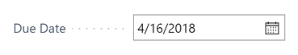

Working with Calendar Dates and Times
Dynamics 365 Business Central offers multiple ways to enter dates and times, including powerful features that accelerate data entry, or help you write complex calendar expressions. There are various places throughout the application where you can enter dates and times in fields. For example, on a sales order, you can set the shipment date. When filtering lists or report data, you can enter dates and times to pinpoint only the data that you are interested in.
Check your region and language settings
The My Settings page specifies the Region and Language that you are using in the application. These settings influence how you enter dates and times.
The Region setting determines how dates, times, numbers, and currencies are shown or formatted.
For date patterns that involve words, the language of the words that you use must correspond to the Language setting.
Note
Dynamics 365 Business Central uses the Gregorian calendar system.
Entering Dates
In a date field, you can enter a date using the standard format for your region setting. Different regions can use different separators between the days, months and years. For example, some regions use dashes (mm-dd-yyyy) and others use forward slashes (mm/dd/yyyy). However, you can use any separators, even a space, and the date will automatically be changed to use separators that match your region.
Note that the format in which dates are displayed on printed reports or emailed documents is not influenced by your personal choice of region setting.
To work more productively with dates and times, you can use any of the methods or formats that are described in the following sections.
Picking dates from the calendar
Any field displaying a calendar icon can be set using the calendar date picker. To display the calendar date picker, activate the calendar icon or press the Ctrl + Home keyboard shortcut in the field.

See also Keyboard Shortcuts in the calendar date picker.
Day-week-year pattern
You can enter a date as a weekday followed by a week number and, optionally, a year. For example, Mon25 or mon25 means Monday in week 25. If you do not enter a year, the year of the work date is used.
Instead of entering the entire word for the day of the week, you can enter part of the word, starting from the beginning. In case of conflicts (such as with s which could be Saturday or Sunday), the days are evaluated according to the region setting. The input is first evaluated against workdate and today as well, so keep this in mind when abbreviating. For example, t already means today, so it cannot mean Tuesday or Thursday.
The week number scheme is always ISO 8601, where week 1 is the week with 4 January in it, or the week with the first Thursday of the year.
Digit patterns
In a date field you can enter two, four, six, or eight digits:
If you enter only two digits, this is interpreted as the day, and it will add the month and the year of the work date.
If you enter four digits, this is interpreted as the day and the month, and it will add the year of the work date. The order of the day and month is determined by your region settings. Even if your region settings have the year before the day and month, four digits are interpreted as the day and month.
If the date you want to enter is in the range 01/01/1930 through 12/31/2029, you can enter the year with two digits; otherwise, enter the year with four digits.
Today
Enter the word for today, in the language set by Language setting, that will set the date to the current date. Instead of entering the entire word, you can enter part of the word, starting from the beginning, such as t or tod, as long as it is not also the start of another word.
Period
To filter on a specific accounting period, in a date field enter the letter p, or the word period, followed by a number that identifies the accounting period, like p2 or period4. The accounting period is relative to the fiscal year of the current work date that set in your Role Center. For example, if the work date is 03/21/20, then p1, or just p, filters on the first accounting period of the fiscal year 2020 (such as 01/01/20..01/31/20). p15 filters on the fifteenth accounting period from the start of fiscal year 2020 (such as 03/01/21..03/31/21).
The accounting periods are defined on the Accounting Periods page. To view or change the accounting periods, open the page here.
Current work date
The work date feature allows you to record transactions using a date that is different from the current date.
The word for 'workdate', in the language set by Language setting, will set the date to the currently set work date that is specified on the My Settings page. Instead of entering the entire word, you can enter part of the word, starting from the beginning, such as 'w' or 'work'.
If you have not defined a work date, the current date will be used as the work date. You may want to use a work date if you have many transactions with a date other than today's date.
See also Change Basic Settings, such as the Work Date.
Closing Date
When you close a fiscal year, you can use closing dates to indicate that an entry is a closing entry. A closing date technically is between two dates, for example between Dec 31 and Jan 1.
To specify that a date is a closing date, put C just before the date, such as C123101. This can be used in combination with all the date patterns.
Examples
The following table contains examples of dates using all the formats. It assumes region settings that format dates according to: year.month.day., a week starting on Monday, and the English language.
| Entry | Interpretation |
|---|---|
| 2018.12.31. | 2018.12.31. |
| 181231 | 2018.12.31. |
| 18.12.31. | 2018.12.31. |
| 18.12.31. | 2018.12.31. |
| 20181231 | 2018.12.31. |
| 18/12,31 | 2018.12.31. |
| 11 | work date year.work date month.11. |
| 1112 | work date year.11.12. |
| t or today | today's date |
| p4 | date range that includes the fourth accounting period, such as 04/01/20..04/30/20 |
| w or workdate | the working date |
| m or Monday | Monday of the work date week |
| tu or Tuesday | Tuesday of the work date week |
| sa or Saturday | Saturday of the work date week |
| s or Sunday | Sunday of the work date week |
| t23 | Tuesday of week 23 of the work date year |
| t 23 | Tuesday of week 23 of the work date year |
| t-1 | Tuesday of week 1 of the work date year |
Setting Ranges
On lists, totals and reports, you can set filters on dates, times and datetimes containing a start value and optionally an end value to display only the data contained in that range. The standard rules apply to the way you set date ranges.
| Meaning | Sample expression (Date) | Data included in the filter |
|---|---|---|
| Interval | 12 15 00..01 15 01 ..12 15 00 p1..p4 |
Records with dates between and including 12 15 00 and 01 15 01. Records with dates of 12 15 00 or earlier. Date range that includes the second, third, and fourth accounting periods, such as 01/01/20..04/30/20. |
| Either/or | 12 15 00|12 16 00 | Records with dates of either 12 15 00 or 12 16 00. If there are records with dates on both days, they will all be displayed. |
| Combination | 12 15 00|12 01 00..12 10 00 ..12 14 00|12 30 00.. |
Records with dates of 12 15 00 or on dates between and including 12 01 00 and 12 10 00. Records with dates of 12 14 00 or earlier, or dates of 12 30 00 or later, that is, all records except those with dates between and including 12 15 00 and 12 29 00. |
You can use any of the valid formats in date range filters. For example, mon14 3..t 4p applied on a datetime field results in a filter from 3 AM on Monday in week 14 of the current work date year, inclusive, until today at 4PM, inclusive.
Using Date Formulas
A date formula is a short, abbreviated combination of letters and numbers that specifies how to calculate dates. You can enter date formulas in various date calculation fields or filters.
Note
In all data formula fields, one day is automatically included to cover today as the day when the period starts. Accordingly, for example, if you enter 1W, then the period is actually eight days because today is included. To specify a period of seven days (one true week) including the period starting date, then you must enter 6D or 1W-1D.
Here are some examples of how date formulas can be used:
The date formula in the recurring frequency field in recurring journals determines how often the entry on the journal line will be posted.
The date formula in the Grace Period field for a specified reminder level determines the period of time that must pass from the due date (or from the date of the previous reminder) before a reminder will be created.
The date formula in the Due Date Calculation field determines how to calculate the due date on the reminder.
The date formula can contain a maximum of 20 characters, both numbers and letters. You can use the following letters, which are abbreviations for calendar units.
| Letter | Meaning |
|---|---|
| C | Current |
| D | Day(s) |
| W | Week(s) |
| M | Month(s) |
| Q | Quarter(s) |
| Y | Year(s) |
You can construct a date formula in three ways.
The following example shows how to use C, for current, and a time unit.
| Expression | Meaning |
|---|---|
| CW | Current week |
| CM | Current month |
The following example shows how to use a number and a time unit. A number cannot be larger than 9999.
| Expression | Meaning |
|---|---|
| 10D | 10 days from today |
| 2W | 2 weeks from today |
The following example shows how to use a time unit and a number.
| Expression | Meaning |
|---|---|
| D10 | The next 10th day of a month |
| WD4 | The next 4th day of a week (Thursday) |
The following example shows how you can combine these three forms as needed.
| Expression | Meaning |
|---|---|
| CM+10D | Current month + 10 days |
The following example shows how you can use a minus sign to indicate a date in the past.
| Expression | Meaning |
|---|---|
| -1Y | 1 year ago from today |
Important
If the location uses a base calendar, then the date formula that you enter in, for example, the Shipping Time field is interpreted according to the calendar working days. For example, 1W means seven working days.
Entering Times
When you enter times, you can insert any non-space separators that you want between the units, but if you use double digits for each unit up to milliseconds, then it is not required.
You only have to write the largest units that you require; the rest will be set to zero. You can also leave out any AM/PM indicator.
The following table lists the various ways in which times can be entered and how they are interpreted. It assumes region settings that format times according to: Hours:Minutes:Seconds.Milliseconds. and use the AM and PM indicators of 'AM' and 'PM', respectively.
| Entry | Interpretation |
|---|---|
| 05:23:17 | 05:23:17 |
| 5 | 05:00:00 |
| 5AM | 05:00:00 |
| 5P | 17:00:00 |
| 12 | 12:00:00 |
| 12A | 00:00:00 |
| 12P | 12:00:00 |
| 17 | 17:00:00 |
| 5:30 | 05:30:00 |
| 0530 | 05:30:00 |
| 5:30:5 | 05:30:05 |
| 053005 | 05:30:05 |
| 5:30:5,50 | 05:30:05.5 |
| 053005050 | 05:30:05.05 |
You should be aware that milliseconds are interpreted as decimal notation. So, for example, 3, 30, and 300 all mean 300 milliseconds, while 03 means 30 and 003 means 3 milliseconds.
You cannot use 24:00 to mean midnight, or use any value greater than 24:00.
The word for 'time' in the language used by Dynamics 365 Business Central will be evaluated to the current time on your computer or mobile device. You can enter any part of the word, starting from the beginning, such as t or TIM.
Entering combined Dates and Times
When you enter datetimes, which are a date and time combined into one field, you must enter a space between the date and the time. The date part can only contain spaces in the form of the official date separator of your region settings. The time can contain spaces around the AM/PM indicator.
It is also possible to enter only a date in a datetime field, but it is not possible to enter only a time.
The following table lists some examples of date/time combinations. The region settings in the examples displays dates in the day-month-year format, using AM/PM designators, English language, and Sunday as the start of the week.
| Entry | Interpretation |
|---|---|
| 08-01-2016 05:48:12 PM | 08-01-2016 05:48:12 PM |
| 131202 132455 | 13-12-2002 13:24:55 |
| 1-12-02 10 | 01-12-2002 10:00:00 |
| 1.12.02 5 | 01-12-2002 05:00:00 |
| 1.12.02 | 01-12-2002 00:00:00 |
| 11 12 | 11-work date month-work date year 12:00:00 |
| 1112 12 | 11-12-work date year 12:00:00 |
| t or today | today's date 00:00:00 |
| t 10:30 | today's date 10:30:00 |
| t 3:3:3 | today's date 03:03:03 |
| w or workdate | the working date 00:00:00 |
| m or Monday | Monday of the work date week 00:00:00 |
| tu or Tuesday | Tuesday of the work date week 00:00:00 |
| sa or Saturday | Saturday of the work date week 00:00:00 |
| s or Sunday | Sunday of the work date week 00:00:00 |
| tu 10:30 | Tuesday of the work date week 10:30:00 |
| tu 3:3:3 | Tuesday of the work date week 03:03:03 |
| t23 t | Tuesday of week 23 of the work date year, current time of day |
| t23 | Tuesday of week 23 of the work date year |
| t 23 | Today 23:00:00 |
| t-1 | Tuesday of week 1 of the work date year |
Entering Duration
Some fields in the application represent a duration, or amount of elapsed time, instead of a specific date or time. You enter a duration as a number followed by its unit of measure.
Here are some examples.
| Duration | Unit of measure |
|---|---|
| 2h | 2 hrs |
| 6h 30 m | 6 hrs 30 mins |
| 6.5h | 6 hrs 30 mins |
| 90m | 1 hr 30 mins |
| 2d 6h 30m | 2 days 6 hrs 30 mins |
| 2d 6h 30m 56s 600ms | 2 days 6 hrs 30 mins 56 secs 600 msecs |
You can also enter a number, which will be automatically converted to a duration. The number you enter is converted according to the default unit of measure that has been specified for the duration field.
To see what unit of measure is being used in a duration field, enter a number and see which unit of measure it is converted to.
For example, if the unit of measure is hours, the number 5 is converted to 5 hrs.
See Also
Working with Dynamics 365 Business Central
Date Calculation for Purchases
Entering Criteria in Filters